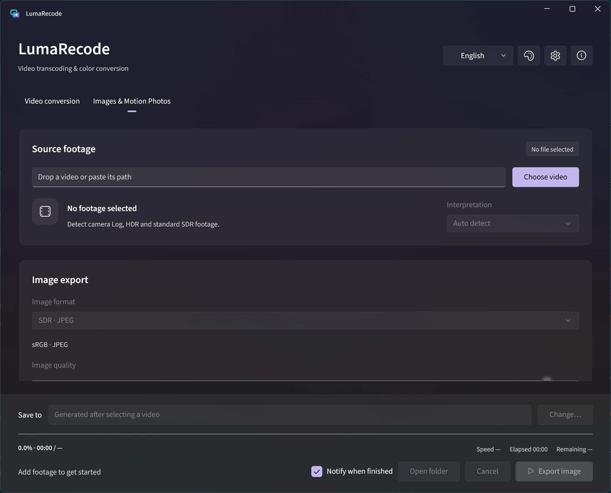

Windows
Windows 11 · x64 or ARM64
Start with the Native AOT portable ZIP, single EXE, or MSI. Choose bundled FFmpeg to get the conversion tools in the same download.
Windows downloadsWindows & macOS · Open source
Convert Log and HDR footage, trim to the frame, and export stills or motion photos from your video.

Convert camera Log, HLG, or PQ to HDR or SDR. Inspect color and metadata before encoding, or choose a LUT for your source.
Play or scrub the timeline, step one frame at a time, and set the exact start and end to export.
Use an available hardware encoder for quick sharing, or choose software encoding for your archive.

Export Ultra HDR JPEG or Android Motion Photo on Windows. On macOS, save HDR HEIC, Adaptive HDR HEIC, and Apple Live Photos.
Read the platform guideWindows 11 · x64 or ARM64
Start with the Native AOT portable ZIP, single EXE, or MSI. Choose bundled FFmpeg to get the conversion tools in the same download.
Windows downloadsmacOS 27 or later · Apple silicon
Choose FFmpeg Full to get the tools in the DMG, or use the standard DMG with your own FFmpeg installation.
macOS downloads